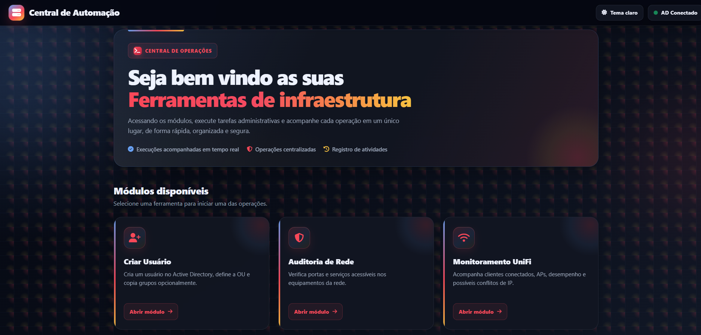
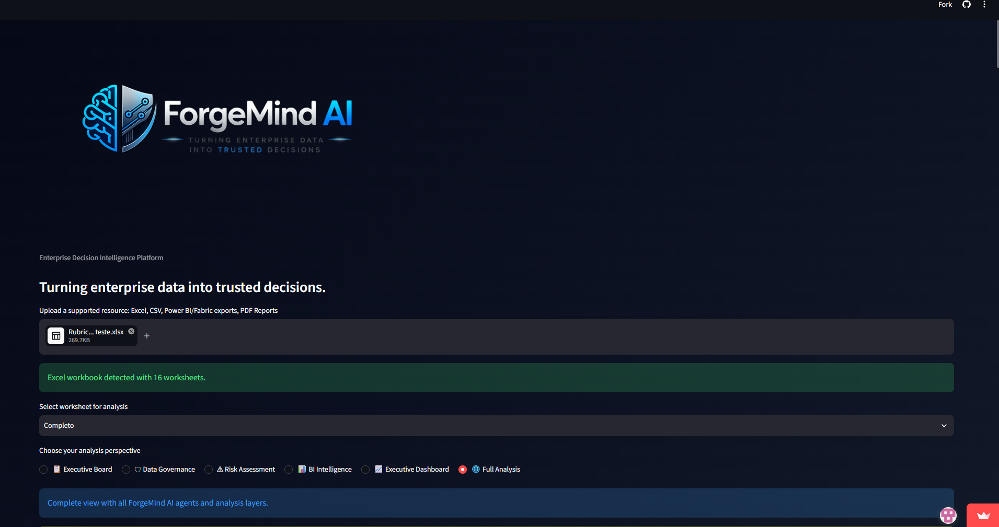

Infrastructure
Servidores, endpoints, Microsoft, AD e redes corporativas.
Construindo ferramentas e processos que tornam operações de TI mais automatizadas, observáveis e seguras.
> initializing profile...
IDENTITY Vinicius Franck
ROLE Infrastructure Analyst
ACTIVE_NODES 04
> network status: CONNECTED
Profissional de Tecnologia da Informação com trajetória iniciada em suporte técnico e evolução para infraestrutura corporativa.
Atualmente atuo com sustentação, redes, ambientes Microsoft, segurança, endpoints, Active Directory e automação de processos.
Em paralelo, desenvolvo projetos próprios de automação e IA, enquanto avanço em observabilidade e cybersecurity.
Servidores, endpoints, Microsoft, AD e redes corporativas.
PowerShell, integrações, rotinas e ferramentas internas.
Endpoint, criptografia, cybersecurity e hardening.
Agentes, LLMs, análise de dados e automação inteligente.
Quality Digital
Base da minha carreira em TI, com atuação em suporte N1/N2, troubleshooting, redes, estações e gestão de chamados.
Pilgrims Consulting
Sustentação, monitoramento e evolução do ambiente tecnológico, com foco em disponibilidade, segurança e desempenho dos serviços de TI.

Plataforma desenvolvida para centralizar operações administrativas, auditorias e ferramentas de infraestrutura em uma única interface.
A próxima camada da Central de Automação será voltada à coleta de métricas, visualização e alertas com Grafana.
Plataforma de inteligência aplicada a dados empresariais, criada para transformar planilhas, relatórios e documentos em análises estruturadas para diferentes perspectivas de decisão.

Laboratório pessoal voltado ao desenvolvimento prático em cybersecurity, redes, análise de vulnerabilidades e fundamentos de segurança ofensiva em ambientes controlados.
Automação da hierarquia entre Active Directory, gestores e Microsoft 365.
PowerShell / AD / Microsoft 365Implantação, operação e troubleshooting de criptografia e endpoint security.
ESET Protect / EFDE / WindowsConectividade, VPN, IPsec e políticas de comunicação entre ambientes corporativos.
Mikrotik / VPN / IPsecPadronização e automação do processo de preparação de novos equipamentos.
Windows / PowerShell / ADCybersecurity, ameaças, vulnerabilidades e princípios de defesa.
Agentes corporativos, inteligência artificial e automação.
Inteligência artificial e automação no ecossistema Microsoft.
Protocolos, redes, componentes e conectividade.
IA responsável, prompting e aplicações estratégicas.
Cybersecurity, ethical hacking, redes e laboratório prático.
Microsoft 365 / Entra ID / Active Directory / Windows
PowerShell / scripting / integrations / process automation
TCP/IP / DNS / DHCP / VPN / IPsec / Mikrotik / UniFi
ESET / Encryption / Kali Linux / Cybersecurity
Grafana / metrics / dashboards / monitoring / alerts
ForgeMindAI / Python / APIs / LLMs / Agents / Analytics
GLPI / assets / tickets / processes / documentation
GitHub / Linux / Windows / troubleshooting
Infraestrutura, automação, observabilidade, cybersecurity, IA ou projetos de tecnologia.